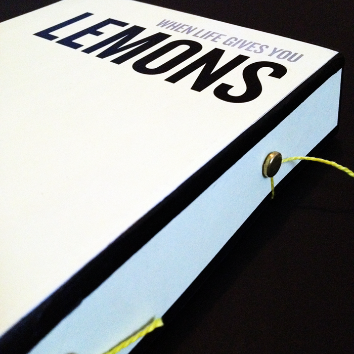

This book was designed in an effort to make grammar more exciting for a younger reader. The cover was debosed by hand, and the book itself was assembled using perfect binding and hardcover accordingly.


The goal for this project was to create a thoughtful way of displaying ones recipies. With the compact, string-closed box and delicate color choices, this piece makes for a nice way blah blah blah bs bs bs.
